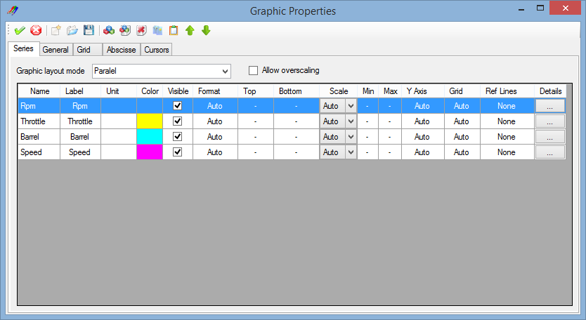

The graphic configuration window permits to edit all properties related to the the graphic window.
Click the 'Edit graph properties'  button of the tool bar to open the graphic configuration window. This command is also available through the 'Properties' item of the graphic contextual menu. Alternatively, press the 'G' key of the keyboard to open the configuration window.
button of the tool bar to open the graphic configuration window. This command is also available through the 'Properties' item of the graphic contextual menu. Alternatively, press the 'G' key of the keyboard to open the configuration window.

The graphic configuration window is composed by a tool bar and a multi-tabs window.
Each tab of the multi-tab is dedicated to a particular configuration section. There five different sections:
Tool bar contains most common configuration commands.
 Apply: Apply graphic configuration changes.
Apply: Apply graphic configuration changes.
 Cancel: Cancel graphic configuration changes.
Cancel: Cancel graphic configuration changes.
 New: Create a new graphic configuration file.
New: Create a new graphic configuration file.
 Open: Open a graphic configuration file (*xgw).
Open: Open a graphic configuration file (*xgw).
 Save: Save the graphic configuration file (*.xgw).
Save: Save the graphic configuration file (*.xgw).
Check the 'Generic series properties' section for details of the rest of tool bar commands
Created with the Personal Edition of HelpNDoc: Single source CHM, PDF, DOC and HTML Help creation